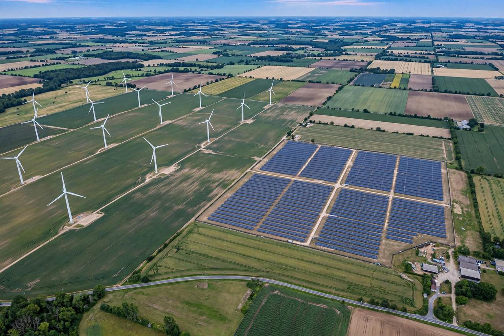

Energy policy

The energy policy of a government comprises the measures by which it manages the production, distribution and consumption of energy: ensuring supply security, affordability, and increasingly, limiting environmental damage and Climate change.
Energy policy interacts with industrial, transport, housing and foreign policy, and is shaped by a country's resource endowment — whether it imports or exports {L('Fossil_fuel','fossil fuels')} matters enormously to the choices available.
Instruments
Governments use price instruments (fuel taxes, carbon taxes and emissions trading, removal of fossil fuel subsidies), regulation (efficiency standards for vehicles, buildings and appliances; pollution limits), public investment and research support (for example feed-in tariffs and production tax credits that built the early {L('Wind_power')} and {L('Solar_power')} industries), and information measures such as appliance labelling.
Security instruments include strategic petroleum reserves, diversification of suppliers and routes, interconnection of electricity grids, and diplomatic or military protection of supply lines.
Energy transitions
Since the 1990s, climate policy has become a central driver: the European Union's emissions trading and renewable targets, China's massive investment in Renewable energy manufacturing and deployment, and the United States' Inflation Reduction Act of 2022 are major examples of policy-led transition. Outcomes depend on policy design and stability; abrupt reversals have repeatedly chilled investment.
The 1973 oil crisis is the classic case of a price shock restructuring policy for a generation.
Debates
Recurring debates concern the role of {L('Nuclear_power')}, the speed of fossil fuel phase-out, carbon capture and storage, hydrogen, and how to distribute transition costs fairly between rich and poor households and between developed and developing countries — the 'just transition' question.
See also: Renewable energy · Climate change · 1973 oil crisis · Fossil fuel · Electricity